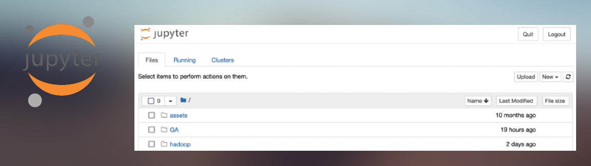

Jupyter Notebook 1.0
How to start it up: You don't have to, it's automatically started when the environment is up.
How to shut it down: You don't have to, it's automatically stopped when the environment is shutting down.
How to access:
- Jupyter UI - accessible via http://localhost:28888; use the osbdet123$ password when prompted.
Description: JupyterLab is the latest web-based interactive development environment for notebooks, code, and data. Its flexible interface allows users to configure and arrange workflows in data science, scientific computing, computational journalism, and machine learning. A modular design invites extensions to expand and enrich functionality.
Project website: https://jupyter.org
Additional notes:
Jupyter Notebook is a core component of the environment as, by using the embedded terminal, allows its operation; additionally to the environment operation, Jupyter Notebook is used to write notebooks and applications implementing non-production class use cases.
Try to be as much organized as possible by relaying on folders; all those files belonging to the same notebook, application, ... should be in the same folder to easily find them and to avoid messing things around.